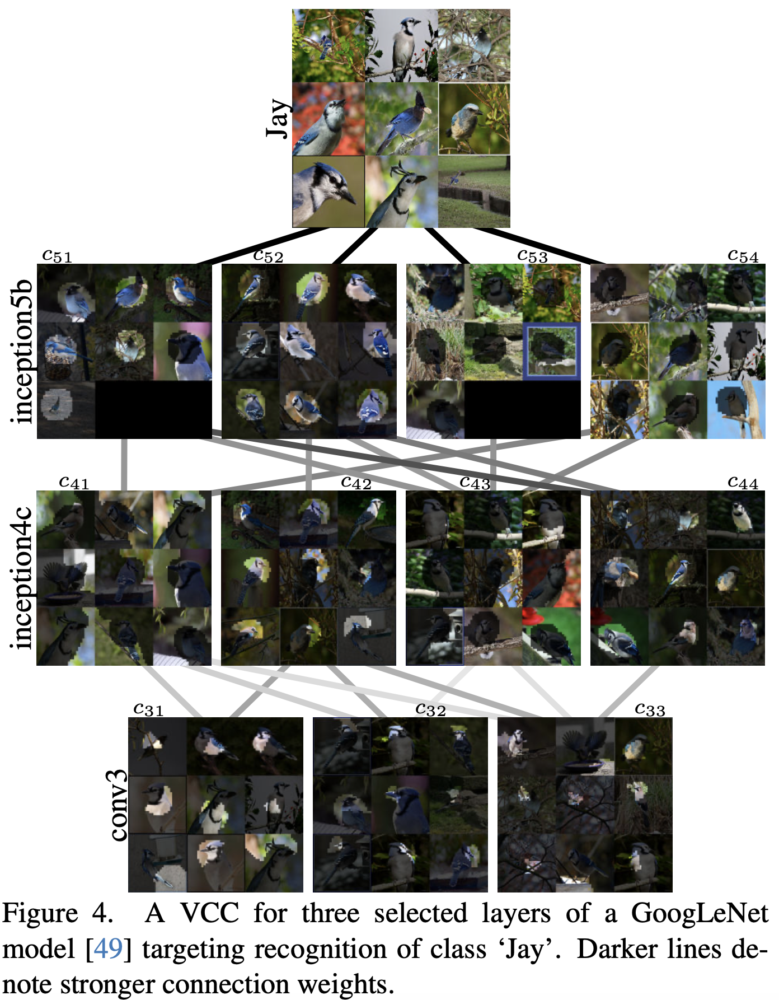
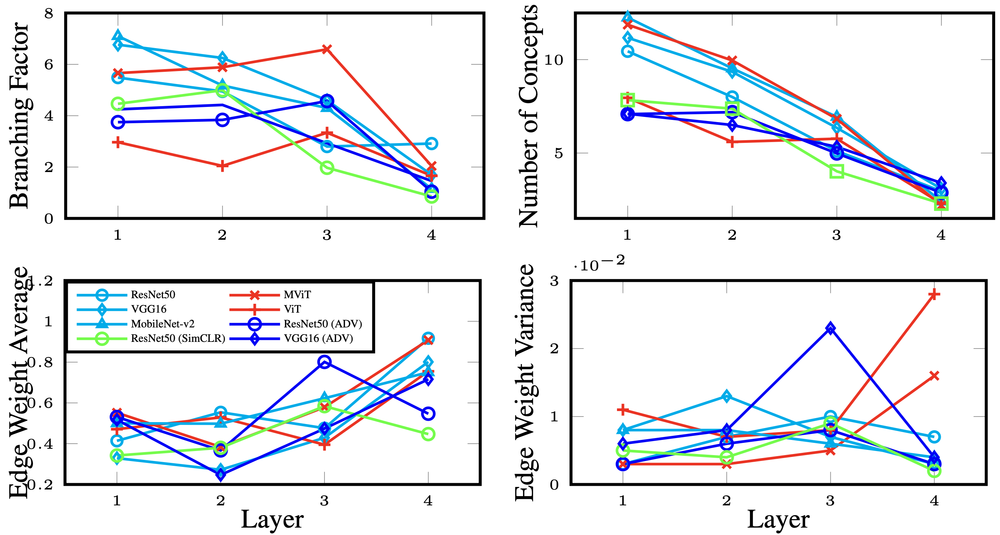
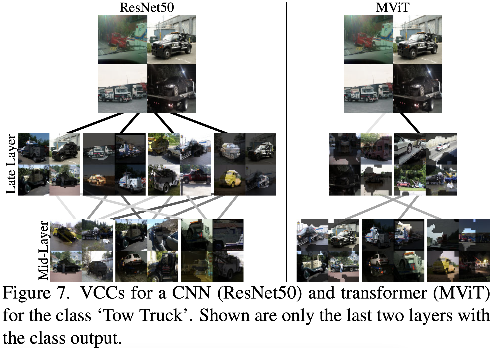
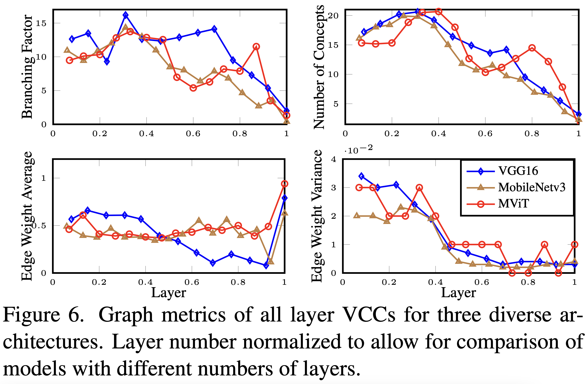
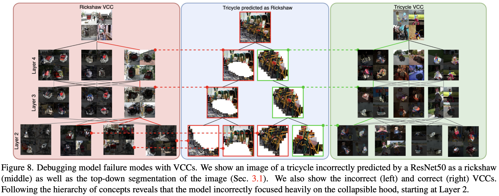

Results
Visualizing concept hierarchies
Figure 4 shows a three layer VCC for GoogLeNet targeting the class “Jay”. Notice how the inception5b
‘bird’ concepts (c51, c52) form as selective weighting of inception4c concepts background (c41),
bird part (c42, c44) and tree branch (c43), while the inception5b background concepts (c53, c54)
form differently from weighting of solely inception4c background part concepts (e.g. tree branch (c43)
and green leaves (c41)). Notably, the network separates subspecies of Jay in the final layer
(e.g. Blue Jay (c52 ) and other types (c51 )). The concepts found in inception4c are composed from
varying combinations of colors and parts found in conv3 (e.g. various bird parts (c31, c33) contribute
to the bird concepts at inception4c). In the end, both scene and object contribute with strong weights
to the final category.

Subgraph Quantitative Analysis
We now quantitatively analyze four-layer VCCs generated for the following CNNs and transformers:
ResNet50, VGG16, MobileNetv3, ViT-b and MViT. Layers are selected approximately uniformly across a
model to capture concepts at different abstractions. We use standard metrics for analyzing tree-like
data structures in a per-layer fashion: branching factor (extent to which the representation is
distributed), number of nodes (how many concepts the model uses to encode a particular class), edge
weights (strength of connection between concepts) and edge weight variance (variability of connection
strength).
We calculate averages over 50 VCCs for 50 randomly selected ImageNet classes.
Patterns are apparent in concept numbers and edge weights: more, but weaker,
concepts in early layers vs. fewer, but stronger, concepts in later layers. These patterns
reflect the shared low-level features (e.g. colors, textures) across classes and more specific
features near the end, which yield larger ITCAV values. Also, CNNs show a decreasing branching factor,
while transformers maintain a consistent number until the final layer, where all models converge to
about two concepts, typically of an ImageNet class’s foreground-background structure. Transformers
have higher final layer edge weight variance compared to CNNs, indicating their ability to better
differentiate earlier concepts’ importance in forming later concepts, potentially explaining their
superior classification performance (i.e. all information is not equally valuable).
We also compare models (ResNet50 and VGG16) when trained with self-supervision (SimCLR) or for adversarial
robustness, i.e. on Stylized ImageNet (ADV). We observe that robust and self-supervised models
have fewer low-level concepts and compositionality than the originals, likely as their training yields
less reliance on texture (stylization perturbs texture) and color (SimCLR training jitters color).

CNNs vs. Transformers: Qualitative Analysis
To examine these patterns further, VCC visualizations for a CNN and transformer subgraphs are shown in Fig. 7.
Here, we limit to a ResNet50 and MViT and two later layers with the class output. The connection diversity
in the last layer is indeed observed to be larger for the transformer vs. the CNN. Notably, over half
of the concepts in the CNN capture background centric concepts, while the transformer has only a single
background centric concept.

All Layer Quantitative Analysis
Figure 6 presents a quantitative analyses on all layer VCCs for three diverse models: (i) a standard CNN, VGG-16,
(ii) an efficient model, MobileNetv3 and (iii) a transformer, MViT. Averages are taken over 10 VCCs for
10 random ImageNet classes. Common trends appear in all models. Concept
composition is non-linear across layers, with branching factor ranging from 5-15 and converging to
approximately two near the last layers. The peak number of concepts, around 20, is consistently at 30-40%
of network depth and, as in the four-layer analysis, also converges to two in the final layer.
Edge weights and variances are in accord with the main findings of the four-layer analysis, but also
reveal other insights into the compositional nature of the models. At a fine grained view, all layer analysis,
each model more readily displays unique edge weight characteristics: VGG16’s average weights decrease
in later layers, MobileNetv3’s drop greatly before the final layer and MViT maintains consistent values.
Still, overall these results indicate that penultimate concepts differ between CNNs vs. transformers, as
supported by our four-layer VCC analysis. Higher variances in initial layers suggest a
diverse combination of concepts, whereas deeper layers indicate a more uniform composition. Transformers,
however, show a variance increase in the final layer, indicating greater compositionality.

Model Debugging with VCCs
To show the VCC’s practical utility, we consider application to model failure analysis. VCCs provide
insights on compositional concepts across layers and distributed representations.
Figure 8 shows a ‘Tricycle’ incorrectly classified as a ‘Rickshaw’ by a ResNet50 model,
and the corresponding incorrect VCC (‘Rickshaw’, left) and correct VCC (‘Tricycle’, right).
As the image is decomposed using our top-down segmentation, it is revealed that the
majority of pooled segments are closer, in terms of l2 distance, to concepts in the
Rickshaw VCC (red outlines) than the tricycle VCC (green outlines). While the model correctly
encoded the wheel and handlebar portions of the images as tricycle concepts, the background and
collapsible hood concepts are composed from layers two through four as rickshaw concepts,
which may cause the error. We also note the lack of other tricycle-specific concepts (e.g. children).

BibTeX
@article{kowal2024visual,
author = {Kowal, Matthew and Wildes, Richard P and Derpanis, Konstantinos G},
title = {Visual Concept Connectome (VCC): Open World Concept Discovery and their Interlayer Connections in Deep Models},
journal = {arXiv preprint arXiv:2404.02233},
year = {2024},
}